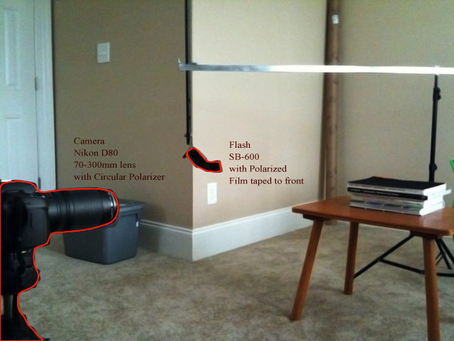
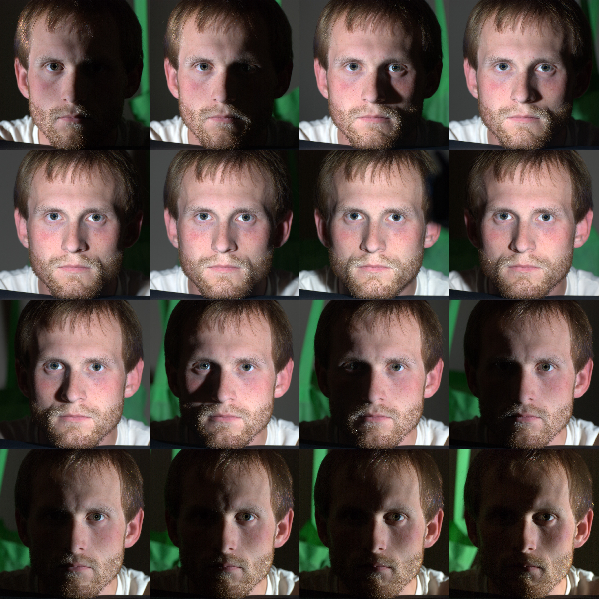
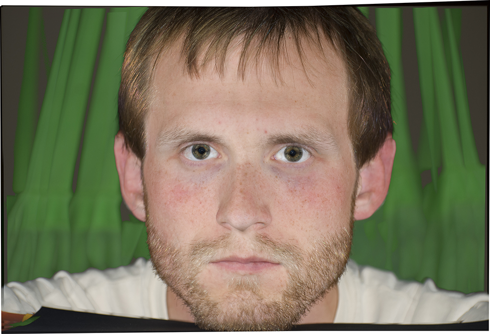
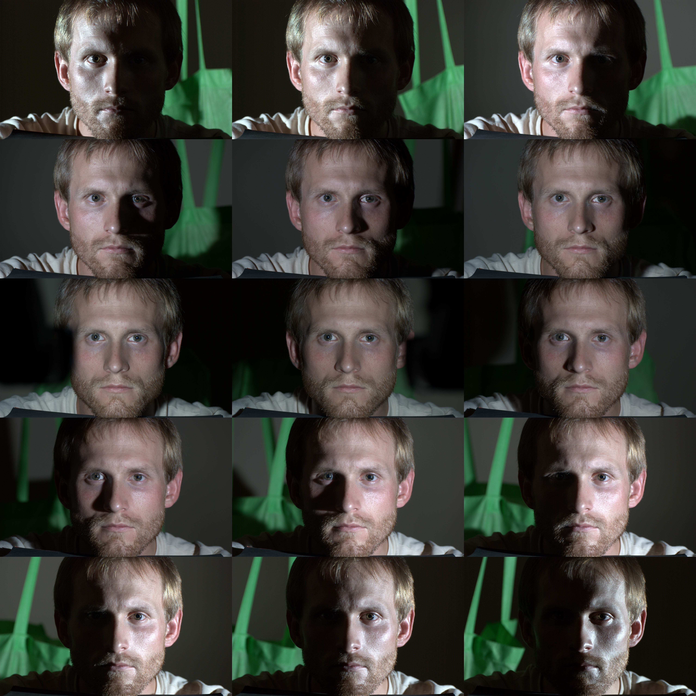
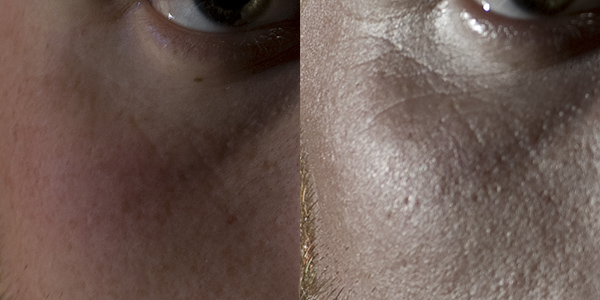

UDN
Search public documentation:
TakingBetterPhotosForTexturesCH
English Translation
日本語訳
한국어
Interested in the Unreal Engine?
Visit the Unreal Technology site.
Looking for jobs and company info?
Check out the Epic games site.
Questions about support via UDN?
Contact the UDN Staff
日本語訳
한국어
Interested in the Unreal Engine?
Visit the Unreal Technology site.
Looking for jobs and company info?
Check out the Epic games site.
Questions about support via UDN?
Contact the UDN Staff
拍摄更好的贴图照片
概述
设置

结果

这些图片在 photoshop 中使用可以返回 max(x,y) 的混合模式 Lighten 来进行排列和混合。结果是每个图片的最亮像素消除阴影。需要对眼部区域做一些润色，因为它们仍然有微弱的高光，所以需要抹去每个图片的高光。结果脸部的图片就具有很很少的定向光线并且没有高光了。
以下是简单图片的组合物但是没有进行偏振，这里您会看到为什么需要偏振处理。 以下的 15 张图片是在把镜头偏光器旋转 90 度并且将其放置在和光源平行的位置进行拍摄的。这显示了从表面直接反射的光线。所有的图片都是当光源在掠射角下您可以看到更多的镜面反射时使用同样的曝光率和白平衡拍摄的，照片的颜色和光源的颜色相近。尽管这个现象是意料之中的，但是当在实践中看到时是非常有趣的。
以下的 15 张图片是在把镜头偏光器旋转 90 度并且将其放置在和光源平行的位置进行拍摄的。这显示了从表面直接反射的光线。所有的图片都是当光源在掠射角下您可以看到更多的镜面反射时使用同样的曝光率和白平衡拍摄的，照片的颜色和光源的颜色相近。尽管这个现象是意料之中的，但是当在实践中看到时是非常有趣的。

另一个有趣的发现是平行极化和交叉极化之间显示细节的差异。反射的镜像光线可以比交叉极化图片的漫反射分量显示更精细的细节。平行极化图片对于创建贴图不是非常有用，但是它们对于制作展现皮肤的阴影可以显示很多细节。